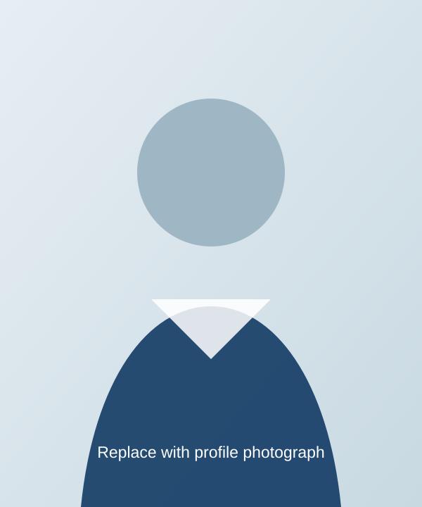

Assistant Professor, Department of Electrical Engineering
American University of Sharjah, UAE

ABOUT
Researcher, Educator, and Advisor in Robotics and Intelligent Systems
I am an Assistant Professor whose research focuses on advanced control, learning-based control, autonomous robotics, and intelligent mechatronic systems. My work integrates theory, algorithms, and experimentation to develop reliable, safe, and efficient systems.
I am passionate about mentoring students and building collaborative, interdisciplinary teams that translate research ideas into validated prototypes and real-world applications.
Department of Electrical Engineering
American University of Sharjah
American University of Sharjah
Sharjah, United Arab Emirates
Research Interests
Advanced Control
Robust and adaptive control for nonlinear and uncertain systems.
Learning-Based Control
Data-driven and model-based learning approaches for control.
Autonomous Robotics
Perception, planning, and control for robotic platforms.
Intelligent Systems
Intelligent mechatronic systems and embedded intelligence.
Academic Appointments
Previous Academic / Research Appointment
Institution
Education
Ph.D., Engineering
University
M.Sc., Engineering
University
Selected Awards & Honors
- Selected award or research distinction
- Teaching, service, or student-mentoring recognition
Professional Service
- Reviewer, peer-reviewed journals and conferences
- Professional and academic service activities
Interested in joining the research group?
Current openings and general research opportunities are listed on the Opportunities page.